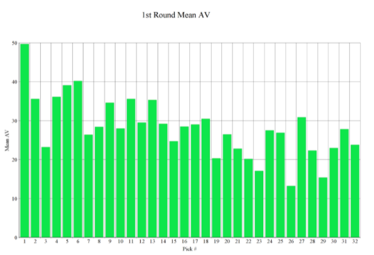
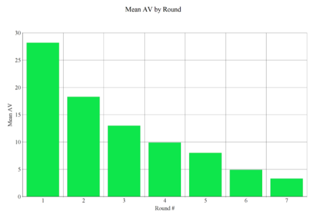
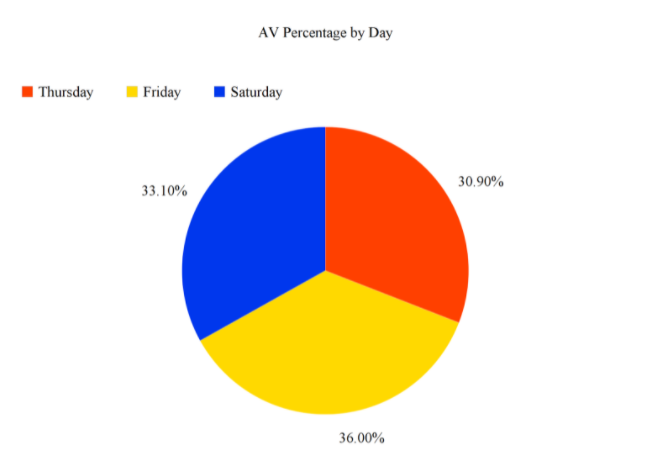

Decoding the Draft: NFL Edition
By Riley Henderson | May 16, 2021

Previously, I have written an article analyzing the comparative value of each NBA Draft position, from #1 to #60. To do this, I looked at the mean and median win shares of players taken at each spot in the last 10 years. My biggest takeaways were that 83% of win shares were off the board by the end of Round 1 and that the median win shares for 2nd rounders was zero. I wanted to see if the last decade of the NFL Draft followed a similar course, so I crunched the numbers for all 7 rounds, which admittedly took longer than the mere 60 NBA picks. Since the NFL does not measure win shares, I instead used career Approximate Value to quantify the comparative value of different picks and rounds. This statistic was created by Pro-Football-Reference founder Doug Drinen based on position-specific metrics. Commenting on the utility of Approximate Value, Drinen explained that “if one player is a 16 and another is a 14, we can't be very confident that the 16AV player actually had a better season than the 14AV player. But I am pretty confident that the collection of all players with 16AV played better, as an entire group, than the collection of all players with 14AV." So while it may not be as effective of a measure as win shares, it should do for a large-scale analysis of over 2,500 players.
Looking at the mean AV for each 1st round pick, you can see that the #1 overall pick really is the best, but that the rest of the round is relatively stable. Compared to the NBA Draft, there is no significant drop-off after “lottery picks.” This is likely because NFL teams have so many more positions where they can acquire talent. Next, I looked at whether there is a drop-off with each round.
According to the graph above, you can see that there is a gradual decline in mean AV with each round, which is to be expected. This round-by-round analysis, if extended more rigorously, could be useful for assessing the value of draft trades. For example, this analysis shows that 4th round picks are approximately twice as valuable as 6th round picks, so dealing two 6ths for a 4th would be a fair deal. Lastly, from a fan's viewing perspective, I looked at what percentage of AV is off the board by Thursday and Friday.
The pie chart above shows that the total AV is pretty evenly distributed across all 3 days of the draft, meaning that all 3 days are watchable. Although the quality of players selected obviously declines each day, this is compensated for by the number of rounds doubling each day (from 1 to 2 to 4). Thus, given the number of players on an NFL roster, the 3rd day of the NFL Draft might have more relevance than the 2nd round of the NBA Draft. Overall, this analysis has shown that the first pick of the draft really is the cream of the crop, but that the drop-off in value the rest of the way is gradual and not steep like the NBA, leaving all 3 days still very much worth watching.
.gif)